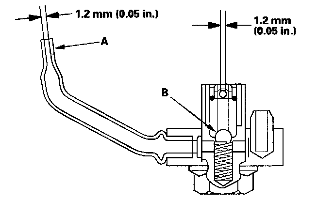

Oil Spray Jet: Testing and Inspection
Oil Jet Inspection1. Remove the oil jet, and inspect it as follows.
^ Make sure that a 1.1 mm (0.04 in.) diameter drill will go through the nozzle hole (A) (1.2 mm (0.05 in.) diameter).
^ Insert the other end of a 1.1 mm (0.04 in.)drill into the oil intake (1.2 mm (0.05 in.) diameter). Make sure the check ball (B) moves smoothly and has a stroke of approximately 4.0 mm (0.16 in.).
^ Check the oil jet operation with an air nozzle. It should take at least 200 kPa (2.0 kgf/cm2, 28 psi) to unseat the check ball.
NOTE: Replace the oil jet assembly if the nozzle is damaged or bent.

2. Carefully install the oil jet. The mounting torque is critical.
Torque: 16 N-m (1.6 kgf-m, 12 lbf-ft)